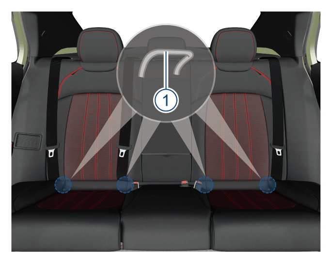

1.将儿童安全座椅放置在后排座椅上。
2.将安全带穿过儿童安全座椅，并将锁舌完全插入锁扣内，直至听到“咔嗒”声。
儿童安全座椅有三种类型的固定安装，分别为三点式安全带固定、ISOFIX系统固定、LATCH系统固定。
为了保证更好的保护效果，避免在使用中座椅头枕影响儿童座椅性能，建议在儿童座椅安装时拆除对应位置的座椅头枕。
1.将儿童安全座椅放置在后排座椅上。
2.将安全带穿过儿童安全座椅，并将锁舌完全插入锁扣内，直至听到“咔嗒”声。

3.向下推凸舌，将肩部安全带穿过儿童安全座椅边上的狭缝。

4.抓住锁扣附近的肩部安全带，向上拉起使腰部安全带不再松弛。此时，用自身重量压在儿童安全座椅上并将其推入车辆座椅。

5.正确摆放安全带并向上推凸舌。确保安全带未扭曲。向上推凸舌时，向上拉肩部安全带上部，使安全带不再松弛。

6.前后左右摇动儿童安全座椅确保其牢牢固定。
7.确保儿童能触及的所有未使用的安全带均已锁上。

如果儿童安全座椅没有固定安全带的装置，请在安全带上安装一个锁止卡扣。
– 在上述步骤1和2之后，上拉肩部安全带并确保腰部安全带不松弛。
– 紧紧抓住锁片附近的安全带。将安全带的两部分捏在一起，使其不会滑出锁片。解开安全带锁扣。
如图所示安装锁止卡扣。将卡扣尽可能靠近锁片，将锁片插入锁扣中。进入步骤6和7。
本车的后排座椅装备的是LATCH系统，能安装LATCH系统或ISOFIX系统儿童安全座椅。以下主要介绍LATCH系统儿童安全座椅的安装说明。

以下主要介绍LATCH系统儿童安全座椅的安装说明。

1.将儿童安全座椅放到座椅上，找到前固定点①，并将儿童安全座椅下安装导槽–箭头–插入前固定点①上，直到听到扣合声。

2.将紧固带穿过头枕支柱，掀开上固定点②的保护盖，并将紧固带钩勾住后固定点②，确保紧固带未扭曲。
3. 绷紧紧固带，摇动儿童安全座椅确保其牢牢固定。
— 页面到底了 —